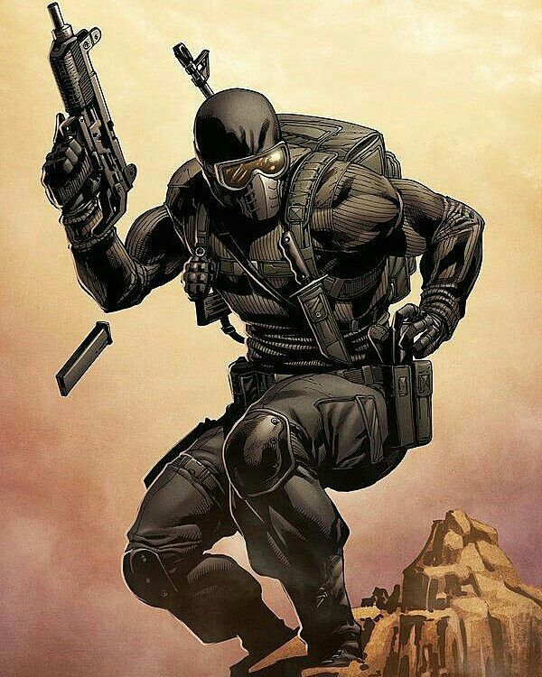
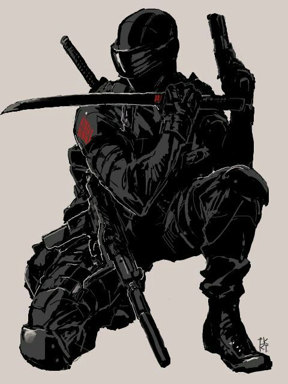
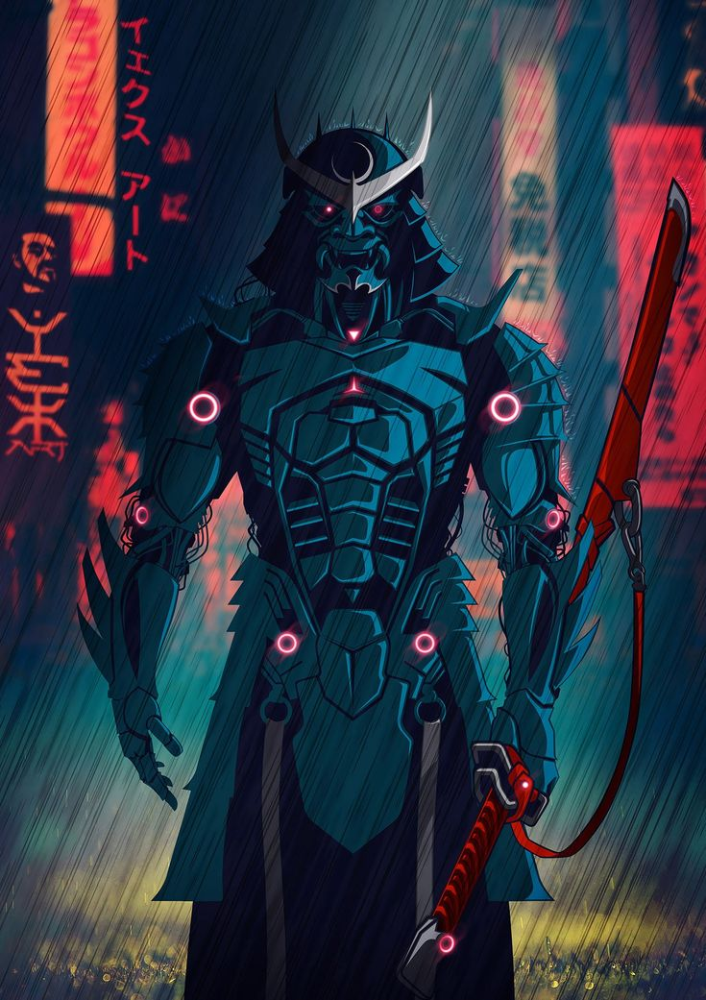
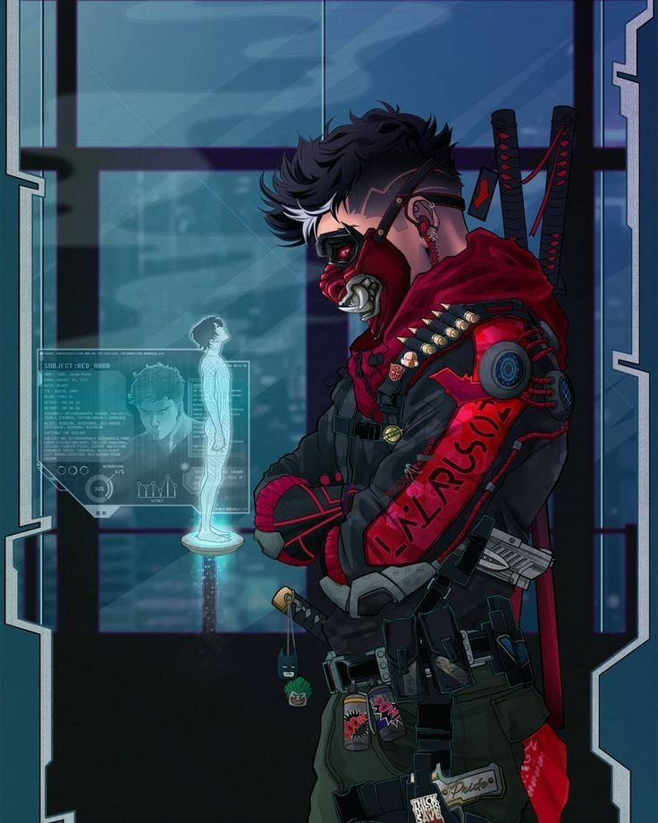
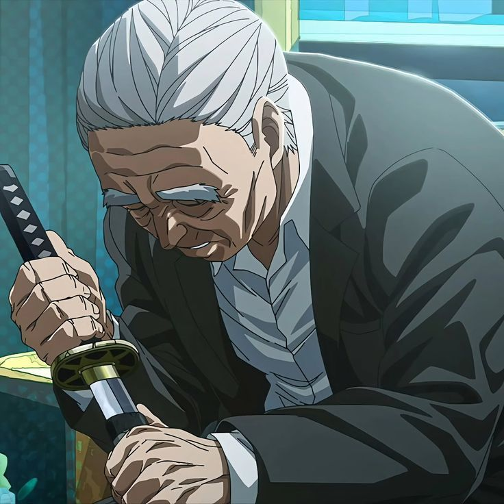

HIERARQUIA DO CLÃ
ASHIGARU NINJA

É o cargo mais baixo do Clã Ishikawa. Seus integrantes não possuem uma Técnica Amaldiçoada própria, atuando como soldados responsáveis por pequenas missões, reconhecimento, escolta e tarefas básicas. Geralmente operam em grupos e representam a maior parte da força militar do clã.
SAMURAI ASSASSIN

Primeiro nível entre os usuários de técnicas amaldiçoadas do clã. São especializados em sabotagem, infiltração e assassinatos. Embora normalmente atuem sozinhos, é comum a formação de pequenas equipes compostas por três ou mais membros quando a missão exige maior coordenação.
HATAMOTO KEISUTO

Guarda pessoal do Líder Ishikawa. Apenas guerreiros de elite alcançam este posto. Sua principal função é proteger o castelo, os dojos e o líder do clã, estando dispostos a sacrificar a própria vida em defesa da linhagem principal.
DAIMYO AKUMA

O mais alto posto entre os assassinos do Clã Ishikawa. Apenas indivíduos com técnicas extremamente poderosas e grande capacidade de combate recebem esse título. São enviados para as missões mais perigosas e quase sempre atuam sozinhos.
LÍDER ISHIKAWA

O Líder Ishikawa representa a autoridade máxima do clã e o portador da Técnica Santuário. Atualmente, o cargo pertence a Suiryu Ishikawa, pai de Hayato Ishikawa. Após a fuga de seu herdeiro, Suiryu utilizou a antiga técnica dos Fujiwara para abandonar sua humanidade e fundir-se permanentemente ao paranormal, mantendo o comando do clã enquanto aguarda o retorno do sucessor legítimo.